Perché la Luna si vede anche di giorno? Dove va il Sole quando arriva la notte? Si può cambiare l’orbita di un pianeta? Un percorso per avvicinarsi all’astronomia con letture, piccoli esperimenti e simulazioni, insieme a chi ci aiuta a crescere.
Le età sono indicative: scegli in base alla curiosità e all’esperienza. Per i più piccoli, l’attività si fa insieme a un adulto.
Partiamo da ciò che si può vedere: la luce, le ombre e la Luna. Prima di imparare un nome, fermiamoci a descrivere una forma o un cambiamento.
OSSERVAZIONE · CON UN ADULTO
La Luna è sveglia anche di giorno?
In una giornata in cui la Luna è visibile, cercatela insieme in una zona di cielo lontana dal Sole. Disegnatene la forma e osservate se è vicino a un tetto, a un albero o a una nuvola. Riprovate in un altro giorno: potrebbe essere altrove, avere un’altra forma o non essere visibile.
Cosa scopriamo: la Luna non appartiene soltanto alla notte. La vediamo quando è sopra l’orizzonte e il contrasto con il cielo è sufficiente.
«La Luna fa luce da sola?»
No: vediamo soprattutto la luce del Sole riflessa dalla sua superficie. Un oggetto può essere illuminato senza produrre luce propria.
Space Scoop racconta fenomeni astronomici con testi brevi. In «Fuochi d’artificio nel cielo di Giove» le aurore diventano un’occasione per parlare di luce e pianeti. Per questa fascia d’età proponiamo una lettura accompagnata e adattata dall’adulto.
Fonte: Space Scoop · articolo del 1 dicembre 2017, basato su una comunicazione Chandra. Lettura d’archivio, non notizia di oggi.
«Tutte le luci del cielo sono stelle?» No: possiamo osservare anche pianeti, la Luna e fenomeni dell’atmosfera. Le immagini scientifiche possono inoltre mostrare radiazioni che gli occhi non vedono: i raggi X dell’articolo non sono colori visibili da una finestra.
Completa il percorso con altri nove esperimenti
Apri una scheda e prova entrambe le condizioni. Illustrazioni originali AD ASTRA generate con IA, a scopo didattico.
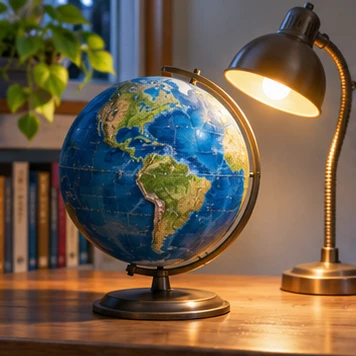
Gira la Terra
Sposta la città rispetto alla lampada.
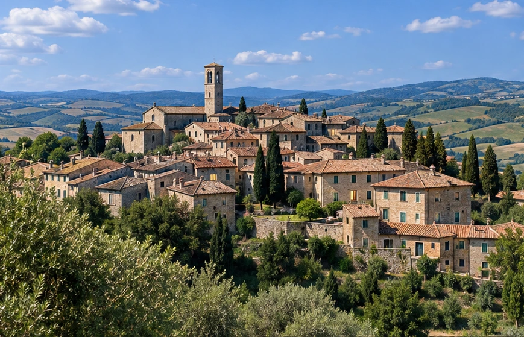
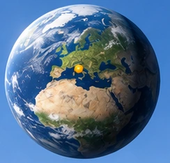
Vista dallo spazio · il punto giallo indica la città sul lato illuminato.
Verso la luce
I tetti sono illuminati.
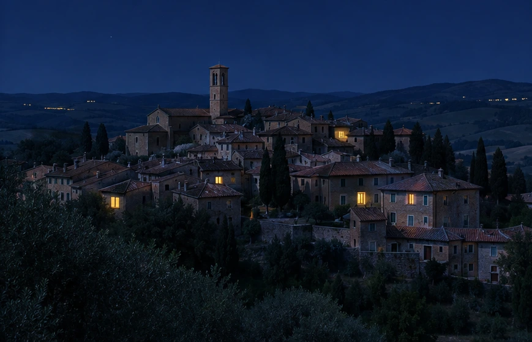
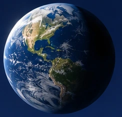
Vista dallo spazio · il punto giallo indica la città sul lato in ombra.
Dalla parte opposta
La città è nella notte.
Perché succede?
Immagina di segnare la tua città sul mappamondo con un adesivo. La lampada rimane ferma mentre fai girare il globo. L’adesivo entra nella luce, la attraversa e poi passa nella parte in ombra. Prova a fermarti a metà del passaggio: sei vicino al confine fra giorno e notte, dove sulla Terra vedresti l’alba o il tramonto, a seconda del verso.
Illustrazione generata con IA. Può contenere inesattezze.
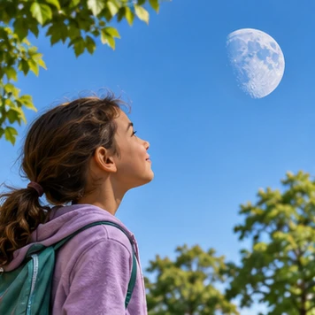
La Luna nel cielo azzurro
Cambia il contrasto nel cielo.
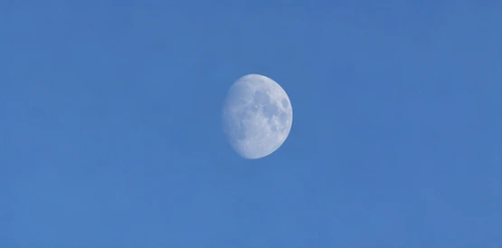
Cielo azzurro
La Luna può essere ancora visibile.
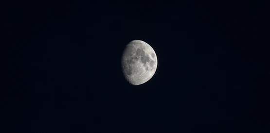
Cielo scuro
La stessa Luna spicca di più.
Perché succede?
Anche di giorno la Luna riflette la luce del Sole. La luce diffusa dall’aria rende il cielo azzurro e riduce il contrasto con il disco lunare. Se il cielo è limpido e la Luna è sopra l’orizzonte, a volte riesci a distinguerla ugualmente. Prova a cercarla con un adulto in una zona di cielo lontana dal Sole.
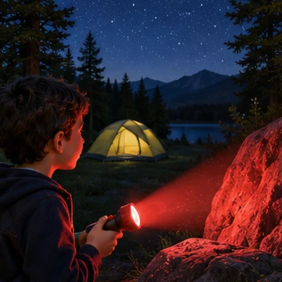
Una luce nel prato
Prova due intensità di torcia rivolte a terra.
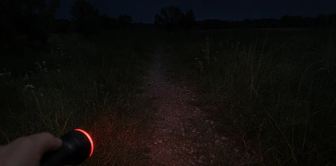
Debole
Il sentiero vicino è appena illuminato.
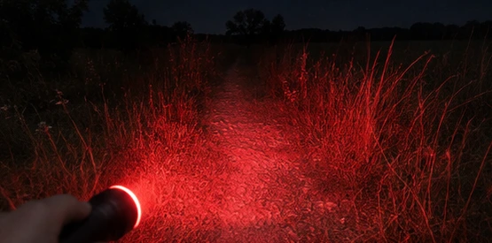
Forte
Il terreno risalta, ma il cielo sembra meno evidente.
Perché succede?
Entrando in un posto buio, all’inizio distingui poche cose. Col passare dei minuti gli occhi diventano più sensibili. Una luce intensa può farti perdere parte di questo adattamento. Durante una serata di osservazione puoi usare una torcia tenue puntata verso i piedi per orientarti e continuare a vedere meglio le stelle deboli.
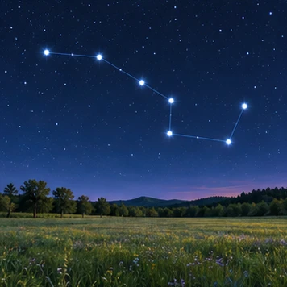
Un disegno tra i punti
Confronta la stessa scena con e senza linee.
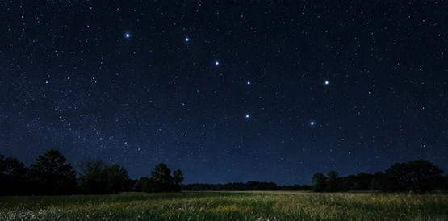
Solo stelle
Si vedono punti separati.
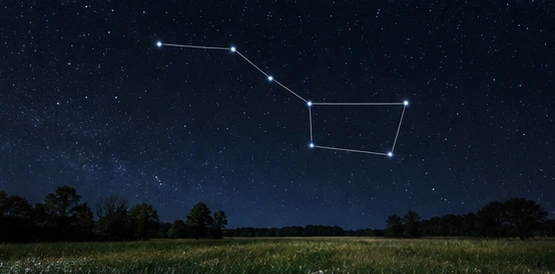
Con le linee
Compare una figura riconoscibile.
Perché succede?
Pensa a unisci i puntini: puoi usare gli stessi punti per immaginare disegni diversi. Le linee sulla carta aiutano a ricordare quali stelle cercare. Due stelle che sulla carta sembrano vicine possono trovarsi a distanze molto diverse da noi. Guarda i punti senza le linee e prova a ricostruire la figura.
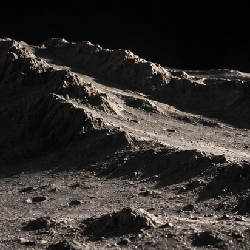
Montagne sulla Luna
Cambia la direzione da cui arriva la luce.
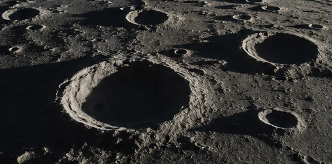
Luce radente
Le montagne proiettano ombre lunghe.
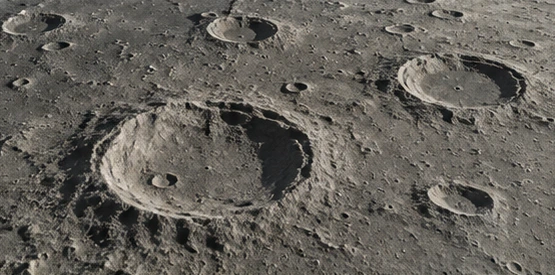
Luce dall’alto
Le ombre diventano corte.
Perché succede?
Quando la luce arriva di lato, una piccola altura può gettare un’ombra lunga. Sulla Luna succede vicino al confine fra la parte illuminata e quella buia. I bordi dei crateri e le montagne risaltano grazie alle loro ombre. Con la luce più alta le ombre si accorciano e alcuni dettagli diventano più difficili da distinguere.
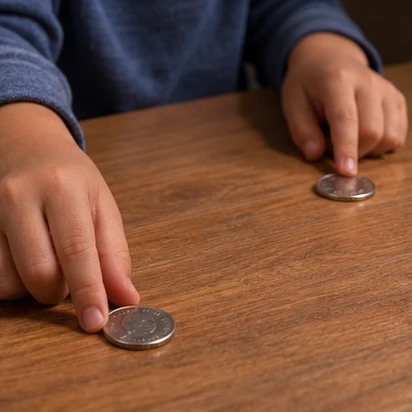
Vicino sembra grande
Sposta la stessa pallina senza cambiarla.
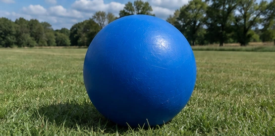
Vicina
Occupa più spazio nel campo visivo.
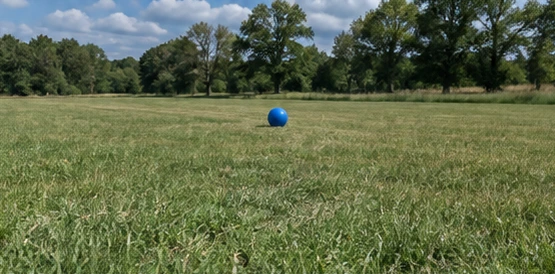
Lontana
Occupa meno spazio.
Perché succede?
Tieni ferma la testa e avvicina una pallina. La pallina ha sempre la stessa misura, ma occupa una parte maggiore di ciò che vedi. Se la allontani, puoi coprirla con un dito più facilmente. È per questo che un oggetto grande e lontano può apparirci piccolo quanto un oggetto vicino.
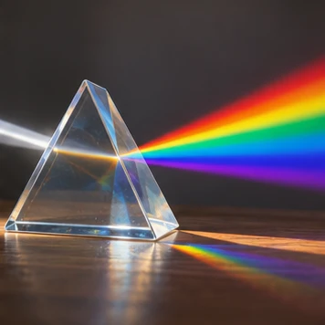
Quanti colori nella luce?
Confronta il fascio prima e dopo il prisma.
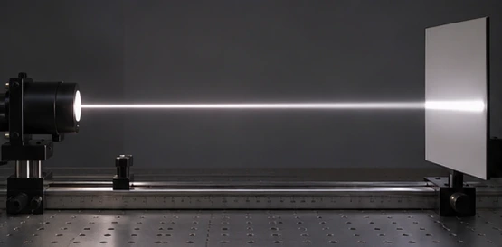
Prima
Il fascio appare bianco.
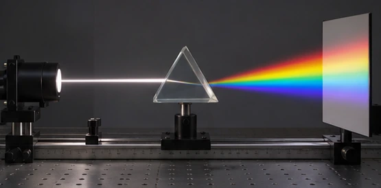
Dopo
Compare una fascia di colori.
Perché succede?
La luce bianca contiene molti colori mescolati. Nel vetro del prisma ogni colore cambia direzione in misura diversa. All’uscita i colori si separano abbastanza da poterli distinguere. Nelle gocce d’acqua avviene una separazione simile, che insieme alla riflessione dentro la goccia contribuisce a formare l’arcobaleno.
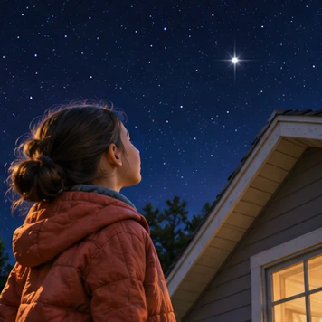
Una stella sopra il tetto
Confronta due disegni dalla stessa finestra.
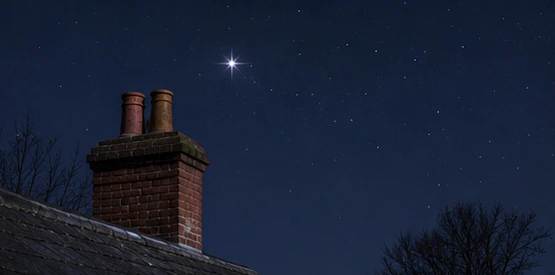
Prima
La stella è vicina al comignolo.
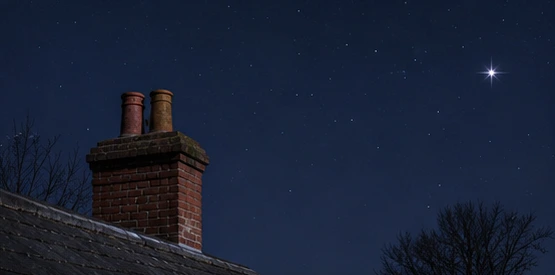
Più tardi
La stella si è spostata rispetto al tetto.
Perché succede?
Il tetto resta fermo rispetto a te. Mentre la Terra gira, cambia invece la direzione in cui devi guardare per ritrovare la stella. Per vedere il cambiamento puoi fare due disegni dalla stessa finestra, segnando l’ora e la posizione rispetto al comignolo. Tieni fisso il punto da cui osservi.
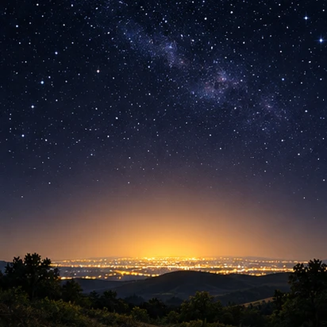
Il cielo dal prato
Confronta la stessa direzione in due ambienti.
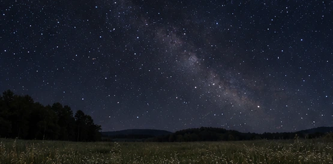
Prato buio
Risaltano più stelle deboli.
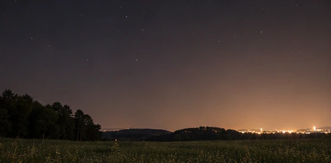
Vicino alla città
Il chiarore ne nasconde molte.
Perché succede?
Le luci di una città illuminano anche l’aria sopra di noi e creano un chiarore diffuso. Una stella debole si confonde più facilmente con quel fondo luminoso. In un luogo buio il contrasto aumenta. Per fare un confronto corretto cerca la stessa zona di cielo e considera anche nuvole e luce della Luna.
SCUOLA PRIMARIA · 8–11 ANNI
Fare una previsione. Poi provare.
Un esperimento comincia con una domanda precisa. Scrivi cosa ti aspetti, cambia una sola condizione e osserva il risultato: anche un’ipotesi smentita insegna qualcosa.
PICCOLO LABORATORIO AD ASTRA
Come cambia un’ombra?
Immagina un bastoncino verticale su un piano orizzontale. Se la luce arriva più dall’alto, la sua ombra si accorcia oppure si allunga? Fai una previsione prima di muovere il cursore.
Schema originale, non in scala: luce a raggi paralleli, terreno piano, bastoncino verticale. Nessuna posizione reale del Sole è calcolata.
Porta l’esperimento fuori dallo schermo
Con un adulto, appoggia un oggetto verticale su una superficie piana e segna la punta dell’ombra a due orari diversi. Annota l’ora e misura sempre dallo stesso punto. Non guardare il Sole: osserviamo l’ombra, non la sorgente.
La risposta e il perché
Una sorgente più alta produce un’ombra più corta. Nel modello, l’altezza del bastoncino è fissa: cambia l’inclinazione dei raggi rispetto al piano. Il cursore permette di isolare questa relazione senza introdurre stagioni o latitudini.
ATTIVITÀ PER LA CLASSE · ITALIANO
Lo spazio entra a scuola
ESERO Italia, programma educativo ASI–ESA, propone risorse e progetti per la scuola primaria e secondaria. Il portale è un punto di partenza per scegliere esperienze sullo spazio insieme a un insegnante.
Come usarlo: apri «Risorse didattiche» e controlla ordine scolastico, materiali richiesti e durata della singola proposta. Eventi e progetti possono prevedere iscrizioni separate.
Fonte: ESERO Italia · raccolta di risorse, non un singolo manuale.
Apri una scheda e prova entrambe le condizioni. Illustrazioni originali AD ASTRA generate con IA, a scopo didattico.
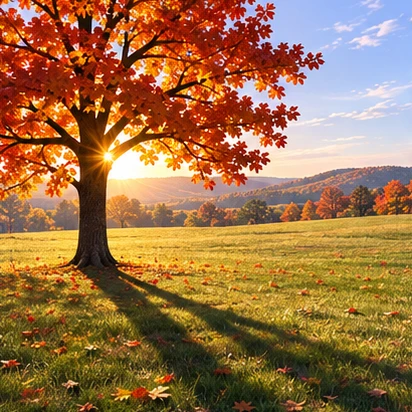
L’ombra dello stesso albero
Confronta la stessa scena nella mattina e al mezzogiorno solare.
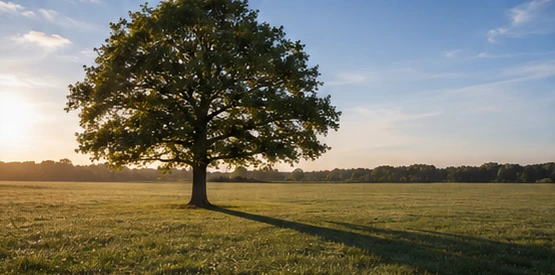
Sole basso
L’ombra attraversa il prato.
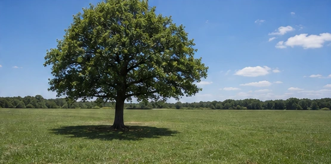
Sole più alto
L’ombra si accorcia.
Perché succede?
Con il Sole basso, il raggio che sfiora la cima dell’albero incontra il terreno lontano dal tronco. Quando il Sole sale, il raggio scende più ripido e incontra il terreno più vicino. Puoi verificare il cambiamento segnando la punta dell’ombra a due orari diversi. Il confronto funziona meglio su un terreno piano.
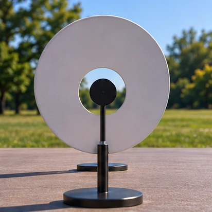
Un piccolo disco copre quello grande
Muovi il disco più vicino lungo la linea di vista.
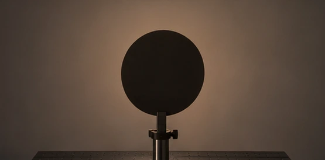
Allineato
Il disco vicino può coprire quello lontano.
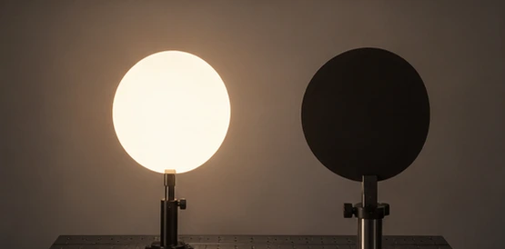
Spostato
Entrambi i dischi rimangono visibili.
Perché succede?
Un disco piccolo tenuto vicino all’occhio può coprire un disco più grande e lontano, come il pollice può nascondere un oggetto dall’altra parte della stanza. Se sposti il disco vicino di lato, scopri quello dietro. Nell’eclissi di Sole l’allineamento coinvolge Luna, Sole e osservatore, e cambia da luogo a luogo.
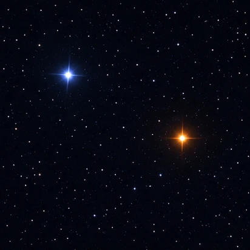
Stelle che tremolano
Confronta lo stesso punto luminoso in due condizioni.
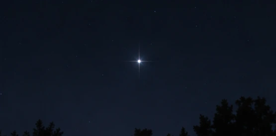
Aria più stabile
La luce varia poco.
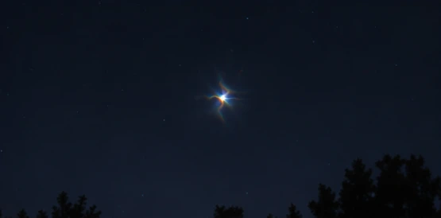
Aria turbolenta
La luce fluttua più rapidamente.
Perché succede?
La luce di una stella attraversa zone d’aria con temperature diverse. Se l’aria si rimescola, la traiettoria della luce cambia in modo irregolare e la stella può sembrare più o meno brillante di istante in istante. Vicino all’orizzonte la luce attraversa un tratto più lungo di atmosfera e l’effetto può essere più evidente.
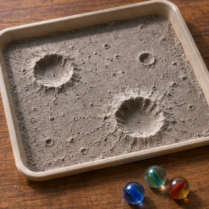
Un nuovo cratere
Sovrapponi due impronte su una superficie già segnata.
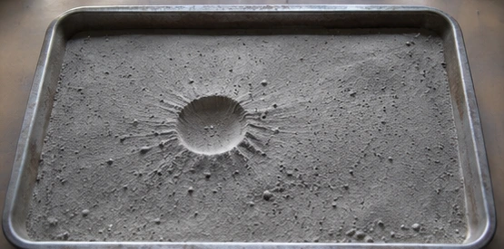
Prima impronta
Il bordo è completo.
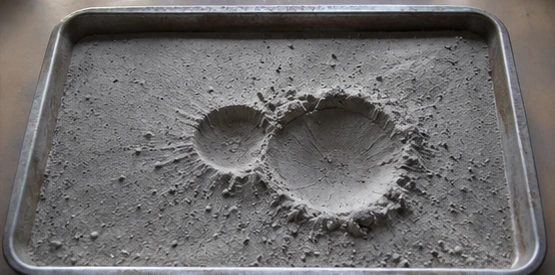
Seconda impronta
Il nuovo bordo interrompe quello vecchio.
Perché succede?
Se una seconda impronta attraversa il bordo della prima, puoi usare l’interruzione per capire quale è arrivata dopo. Lo stesso indizio aiuta a leggere le superfici della Luna. È una misura di età relativa: permette di mettere due eventi in ordine. Per assegnare loro un’età in anni occorrono altri dati.
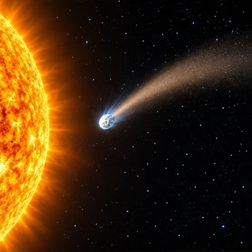
Segui la coda della cometa
Avvicina la cometa al Sole nel modello.
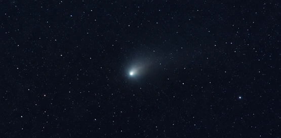
Lontana
L’attività può essere debole.
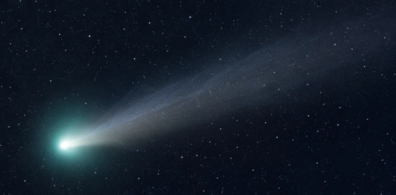
Più vicina
Gas e polvere diventano più evidenti.
Perché succede?
Avvicinandosi al Sole, i ghiacci della cometa possono passare direttamente allo stato di gas e trascinare polvere. Il vento solare spinge il gas ionizzato lontano dal Sole. La polvere può disegnare una coda più curva lungo la traiettoria. Osserva la direzione rispetto al Sole: la coda può trovarsi anche davanti alla cometa lungo il suo moto.
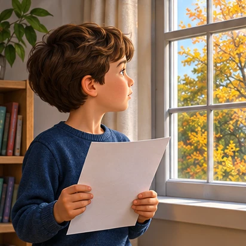
Una foto col foro
Confronta la proiezione a due distanze dallo schermo.
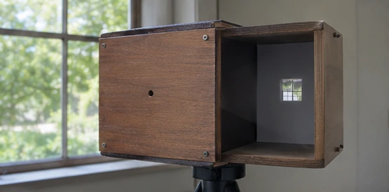
Schermo vicino
L’immagine è più piccola.
Schermo lontano
L’immagine cresce e si attenua.
Perché succede?
I raggi provenienti dall’alto della finestra attraversano il foro e raggiungono la parte bassa dello schermo. Quelli dal basso finiscono in alto. Allontanando lo schermo, aumenta la distanza fra i punti proiettati e la stessa luce si distribuisce su un’area maggiore. Prendi come soggetto una finestra illuminata indirettamente.
Un indizio con due occhi
Confronta la matita davanti a uno sfondo lontano.
Occhio sinistro
La matita appare da un lato.
Occhio destro
La matita appare spostata.
Perché succede?
Ogni occhio vede la matita da una posizione diversa. Chiudendoli a turno, la matita sembra saltare rispetto allo sfondo. Prova ad allontanarla dal viso: il salto si riduce. Per misurare distanze stellari gli astronomi osservano da punti diversi dell’orbita terrestre e confrontano la posizione apparente della stella.
Da che parte guardi?
Ruota idealmente sul posto.
Guardi a nord
L’est è alla tua destra.
Guardi a sud
L’est è alla tua sinistra.
Perché succede?
Immagina una rosa dei venti disegnata a terra. Quando ti giri verso sud, il disegno resta fermo e ruotano il tuo corpo e il tuo sguardo. Perciò l’est passa dalla tua destra alla sinistra. Ripeti l’esercizio girandoti verso est e prova a prevedere da che parte troverai il nord.
Perché le stagioni cambiano?
Confronta due posizioni della Terra lungo l’orbita.
Nord inclinato verso il Sole
Nel nord il Sole sale di più e le giornate sono più lunghe.
Nord inclinato dall’altra parte
Nel nord il Sole resta più basso e le giornate si accorciano.
Perché succede?
L’asse terrestre mantiene quasi la stessa direzione lungo l’orbita. Quando l’emisfero nord è inclinato verso il Sole, la luce arriva più direttamente e l’intervallo fra alba e tramonto si allunga. Sei mesi dopo accade il contrario. Nello stesso momento l’emisfero sud attraversa la stagione opposta.
SCUOLA SECONDARIA · 12–16 ANNI
Dall’intuizione al modello.
Ora confrontiamo spiegazioni e prove. Una simulazione ci permette di controllare alcune variabili, ma semplifica il mondo: imparare a riconoscerne i limiti fa parte dell’esperimento.
SIMULAZIONE ESTERNA · ITALIANO
Gravità e orbite, con PhET
Un pianeta non resta in orbita perché la gravità smette di agire. Il suo moto e l’attrazione gravitazionale determinano insieme la traiettoria. La simulazione PhET dell’Università del Colorado Boulder permette di esplorare questa relazione.
Osserva il moto senza modificare subito i comandi.
Scegli una variabile disponibile, come la velocità iniziale.
Prevedi come cambierà il percorso, poi verifica.
Confronta il modello con la spiegazione della lezione.
Fonte: PhET Interactive Simulations · scheda italiana «Gravità e orbite». La simulazione richiede JavaScript sul sito esterno; le attività aggiuntive dei docenti possono avere condizioni di accesso diverse.
No. La gravità è proprio ciò che curva il moto. In un modello orbitale ideale il corpo è in caduta libera continua: non segue una linea retta perché è sottoposto all’attrazione del corpo centrale.
VERSO LA SCUOLA DI ASTRONOMIA
Impara a interrogare una fonte
Un’immagine spettacolare è un punto di partenza, non una spiegazione completa. Cerca chi l’ha prodotta, quando sono stati raccolti i dati e che cosa rappresentano colori e simboli.
Fotografia o simulazione? Il modo di interpretarla cambia.
Visibile o altra radiazione? Un colore può essere assegnato a dati infrarossi o X.
Notizia recente o archivio? Controlla la data del risultato, non soltanto quella della pagina.
Un’immagine blu mostra sempre qualcosa di freddo?
No. Nelle stelle il blu può indicare una temperatura superficiale maggiore del rosso; nelle immagini a falsi colori la legenda può assegnare il blu a una banda o a un’intensità. Il significato dipende dal contesto.
Apri una scheda e prova entrambe le condizioni. Illustrazioni originali AD ASTRA generate con IA, a scopo didattico.
Una sonda sfiora un pianeta
Confronta lo stesso incontro in due sistemi di riferimento.
Rispetto al pianeta
In un sorvolo ideale la velocità lontano dal pianeta ha modulo quasi uguale prima e dopo.
Rispetto al Sole
La velocità finale può aumentare o diminuire.
Perché succede?
La gravità del pianeta curva la traiettoria della sonda. Nel riferimento del pianeta, in un incontro ideale, la sonda arriva e riparte lontano con lo stesso modulo della velocità. Per descrivere il moto rispetto al Sole devi sommare la velocità del pianeta a quella della sonda. La direzione di quest’ultima è cambiata, quindi cambia anche la somma.
Un pianeta davanti alla stella
Aumenta il raggio del pianeta mantenendo fissa la stella.
Piccolo
Copre una piccola parte del disco.
Più grande
Il calo di luce aumenta.
Perché succede?
Un telescopio registra la luce complessiva della stella mentre il pianeta passa davanti al disco. In un modello uniforme la frazione di luce persa è il rapporto fra l’area del pianeta e quella stellare. Se raddoppi il raggio del pianeta la sua area quadruplica. Nelle osservazioni reali contano anche il percorso sul disco e le variazioni di luminosità della stella.
Tre lampade a distanze diverse
Confronta due lampade identiche.
Distanza doppia
Arriva un quarto del flusso.
Distanza tripla
Arriva un nono del flusso.
Perché succede?
Immagina la luce distribuita sulla superficie di una sfera centrata sulla lampada. Se raddoppi il raggio della sfera, la superficie diventa quattro volte più grande. Ogni metro quadrato ne riceve quindi un quarto, a parità di emissione. Il modello assume diffusione uniforme e assorbimento trascurabile.
Il pianeta che manca il disco
Inclina l’orbita rispetto alla vista di taglio.
Vista di taglio
Il pianeta può transitare davanti alla stella.
Vista inclinata
Il pianeta può passare sopra o sotto il disco apparente.
Perché succede?
Osserviamo un’orbita proiettata sul piano del cielo. Se la vediamo quasi di taglio, la proiezione del pianeta può attraversare il disco stellare. Inclinando l’orbita, la sua traiettoria apparente si può spostare abbastanza da evitarlo. Quindi una stella senza transiti rilevati può comunque avere pianeti.
Righe che cambiano posto
Confronta le righe spettrali con quelle misurate in laboratorio.
Sorgente a riposo
Le righe coincidono nel modello.
Sorgente in allontanamento
Le righe si spostano verso lunghezze d’onda maggiori.
Perché succede?
Atomi e molecole producono righe a lunghezze d’onda riconoscibili. In un semplice caso di moto radiale, se la sorgente si allontana, il disegno delle righe si ritrova a lunghezze d’onda maggiori. Per identificare il fenomeno confronta un gruppo di righe con uno spettro di riferimento. Nei dati reali anche altri effetti possono contribuire allo spostamento.
Una posa sotto le stelle
Confronta due tempi di posa con macchina fissa.
Posa breve
Le stelle si muovono poco nell’immagine.
Posa lunga
Le stelle possono lasciare scie più visibili.
Perché succede?
Durante la posa, una camera fissa raccoglie luce mentre la Terra ruota. Allungando l’esposizione, la stessa stella illumina più posizioni successive sul sensore. La lunghezza visibile della scia dipende anche dall’obiettivo e dalla zona di cielo inquadrata. Vicino al polo celeste il moto apparente descrive archi più piccoli.
Terra e Luna attorno a un punto
Confronta la distanza dei due corpi dal centro di massa.
Terra
Il suo centro è più vicino al centro di massa.
Luna
Il suo centro è più lontano.
Perché succede?
Il centro di massa è il punto di equilibrio del sistema. Poiché la Terra è molto più massiccia della Luna, questo punto si trova entro la Terra, spostato verso la Luna. I due centri ruotano intorno a quel riferimento comune. Se le masse fossero uguali, il punto di equilibrio sarebbe a metà strada.
Quanto tarda una risposta?
Immagina di inviare un segnale e ricevere subito un’eco.
Un minuto luce
La risposta torna dopo due minuti.
Dieci minuti luce
La risposta torna dopo venti minuti.
Perché succede?
Un minuto luce misura la distanza percorsa dalla luce in un minuto. Se una sonda fosse a quella distanza, impiegheresti un minuto per farle arrivare il segnale e un altro per ricevere la risposta. Questa stima suppone una risposta immediata. Nei casi reali si aggiungono i tempi di elaborazione.
Potrebbe esserci acqua liquida?
Cambia la distanza di un pianeta dalla stessa stella.
Più vicino
Riceve più energia per metro quadrato.
Più lontano
Riceve meno energia per metro quadrato.
Perché succede?
La distanza dalla stella determina quanta energia arriva al pianeta, ma la superficie può scaldarsi in modi diversi. Un’atmosfera può trattenere calore, mentre nubi e ghiaccio possono riflettere parte della luce. Per capire se l’acqua può rimanere liquida servono informazioni su temperatura, pressione e condizioni locali.
COSTRUIRE · MISURARE · TENERE UN DIARIO
Il cielo diventa un laboratorio.
Un cartoncino diventa una mappa del cielo, un bastoncino ci aiuta a leggere le ombre, un tetto diventa il riferimento per seguire le stelle. Non servono strumenti costosi: servono una domanda, un punto da cui osservare e la voglia di tornare a guardare.
Scegli un laboratorio e comincia con una previsione: che cosa penso che cambierà? Costruisci o prepara il materiale, annota luogo e ora, poi confronta ciò che hai visto con l’ipotesi iniziale. Se il risultato è diverso, cerca quale condizione potrebbe aver influito. Anche una sera nuvolosa va registrata: distingue un’osservazione mancata da un fenomeno assente.
Le sette attività si possono svolgere separatamente oppure collegare: il planisfero prepara l’uscita, le mani aiutano a stimare gli angoli e il quaderno conserva le scoperte. I pulsanti qui sotto portano alle istruzioni; in ogni laboratorio trovi una domanda da discutere e i materiali da consultare o stampare.
I più piccoli lavorano con un adulto, che si occupa di tagli e fori. Di giorno osserviamo ombre e paesaggio: mai il Sole a occhio nudo o con strumenti.
Illustrazione evocativa generata con IA: per costruire e orientare gli strumenti segui le istruzioni, non le scale della scena.Illustrazione generata con IA. Può contenere inesattezze.
8+ anni · 45–60 min · costruzione con un adulto
Un cielo girevole di cartone
Occorrente. Due cartoncini, stampante, forbici, fermacampione e nastro adesivo.
Prepara. Stampa disco e custodia del Gruppo Astrofili Polesani. Ritaglia la finestra, monta il disco e verifica che ruoti senza piegarsi. Questo è un planisfero girevole, spesso chiamato astrolabio didattico: non è l’astrolabio storico completo.
Osserva e annota. Imposta la data e l’ora secondo le istruzioni del modello. Per l’ora legale considera l’ora standard richiesta dalla carta: in estate, normalmente sottrai un’ora all’ora civile. Controlla la latitudine prevista dal modello, orienta la carta e confronta una costellazione con il cielo. La carta va guardata rivolta verso il cielo, non come una mappa stradale.
Prevedi quali stelle appariranno due ore dopo, poi gira il disco: che cosa entra nella finestra? Le stelle hanno cambiato davvero distanza fra loro?
No: cambia la porzione di cielo sopra l’orizzonte e l’orientamento apparente. Non tutti i punti della carta saranno visibili da una città e i pianeti non hanno posizioni fisse sul disco.
Occorrente. Matita senza punta, plastilina, base rigida, squadra, righello, orologio e quaderno.
Prepara. Fissa la matita ben verticale su una base orizzontale che non si muova. Segna il piede dello stilo. Controlla la verticalità da due lati: uno stilo inclinato falserebbe il confronto. Non serve una punta affilata.
Osserva e annota. Segna la punta dell’ombra e l’ora ogni 30–60 minuti, prima e dopo la metà della giornata. Misura la lunghezza dal piede. Confronta i dati con il laboratorio a cursore già presente nella pagina: la sorgente più alta produce un’ombra più corta.
L’ombra più corta cade sempre alle 12 del tuo orologio?
No. Il passaggio al meridiano dipende da longitudine, data e ora legale. Nelle condizioni italiane, a mezzogiorno solare l’ombra di uno stilo verticale punta verso nord; per trovarlo meglio servono misure attorno al minimo, non una sola lettura alle 12.
4–7 con adulto anni · 8+ verifica autonoma · 10 min
Una bussola con le braccia
Occorrente. Spazio libero, quattro cartellini N–E–S–O e una direzione nord già verificata.
Prepara. Un adulto identifica il nord con una carta o una bussola lontano da oggetti metallici. Rivolgiti a nord: il sud è dietro di te. Apri le braccia: la destra indica est e la sinistra ovest. Segna le direzioni sul terreno.
Osserva e annota. Ruota verso est e prova a ritrovare il nord senza spostare i cartellini. Di notte un adulto può confrontare il nord con la direzione della Polare; non usare il Sole come bersaglio da guardare.
Se mi giro, anche est e ovest si girano insieme a me?
No: ruota il tuo corpo, non i punti cardinali. Il Sole non sorge esattamente a est e non tramonta esattamente a ovest in ogni giorno dell’anno.
Occorrente. Le tue mani, un righello, un cartoncino e due riferimenti lontani dal Sole.
Prepara. Tendi il braccio senza forzarlo e chiudi un occhio. Un mignolo copre circa 1°, tre dita circa 5°, un pugno circa 10°. Usa sempre la stessa posizione: avvicinare la mano al viso aumenta l’angolo che copre. I valori cambiano fra persone.
Osserva e annota. Scegli due stelle riconosciute o due dettagli del paesaggio e stima quanti pugni li separano. Ripeti con tre dita e confronta. Se il gesto non è comodo, usa una striscia di cartone: a 57 cm dall’occhio, 1 cm corrisponde circa a 1°.
Una Luna apparentemente enorme occupa davvero un pugno?
No: il suo diametro angolare è circa mezzo grado. Le stime con la mano sono grossolane e non misurano la distanza fisica degli astri. Non provare mai questa attività sul Sole.
Occorrente. Planisfero, matita e un cielo con una porzione di nord libera.
Prepara. Per “clipping stellare” proponiamo un riconoscimento per porzioni e allineamenti: scegli pochi punti luminosi, riconosci la figura e collegala a un gruppo vicino. In astronomia il metodo di passare da un riferimento a un altro è chiamato star hopping.
Osserva e annota. Individua il Grande Carro e le due stelle sul bordo esterno della sua coppa. Parti da Merak, passa per Dubhe e continua nella stessa direzione per circa cinque volte la loro separazione: arrivi vicino alla Polare. Conferma la posizione con la carta, poi cerca il Piccolo Carro. Se le stelle guida sono nascoste, non inventare il percorso: cambia momento o usa un’altra carta.
La Polare è la stella più luminosa di tutto il cielo?
No. È utile perché si trova vicino al polo nord celeste. Le linee uniscono stelle che ci appaiono vicine, ma non certificano che siano vicine nello spazio.
Carta didattica AD ASTRA: confronta la figura con l’orientamento del cielo reale.
1. Riconosci la coppa del Grande Carro. 2. Trova Merak → Dubhe. 3. Prolunga circa cinque volte. 4. Conferma la Polare con la carta. 5. Cerca il Piccolo Carro, senza pretendere che tutte le sue stelle siano visibili.
Occorrente. Quaderno, matita, orologio e un punto di osservazione sicuro.
Prepara. Scegli da terra o da una finestra sicura un tetto o un albero riconoscibile. Segna il punto in cui appoggi i piedi e la direzione in cui guardi. Disegna tre volte lo stesso profilo su fogli separati, senza spostarti. Non occorre salire sul tetto.
Osserva e annota. Disegna 3–5 stelle rispetto al profilo e scrivi l’ora. Ripeti dopo 30–60 minuti e ancora una volta più tardi. Non sostituire le stelle con luci di aerei o satelliti. Confronta gli spostamenti: vicino alla Polare e verso sud le traiettorie apparenti hanno orientamenti diversi.
Il cielo ruota perché tutte le stelle girano intorno alla nostra casa?
È soprattutto la rotazione terrestre a produrre il moto apparente durante poche ore. Le distanze fra le stelle di una stessa costellazione restano quasi invariate nella serata. Spostare il punto di osservazione, invece, cambia il riferimento del tetto.
4–7 con adulto anni · 8+ diario personale · 2–4 settimane
Il mese della mia Luna
Occorrente. Calendario bianco PDF, matita e pochi minuti quando le condizioni lo permettono.
Prepara. Scrivi mese e anno e barra le date inesistenti. Cerca la Luna con un adulto in una zona lontana dal Sole, anche di giorno quando è visibile. Disegna la parte luminosa senza riempire in anticipo le caselle: sono dati, non un compito da indovinare.
Osserva e annota. Annota ora, direzione approssimativa e cielo sereno o nuvoloso. Se non l’hai vista, scrivi “non vista”: non significa automaticamente Luna nuova. Confronta i disegni dopo una settimana. Prova a prevedere come cambieranno forma e orario di visibilità.
La parte buia è sempre l’ombra della Terra?
No: nelle fasi ordinarie vediamo una diversa porzione della metà lunare illuminata dal Sole. L’ombra della Terra interviene nelle eclissi lunari. Un ciclo completo dura circa 29,5 giorni: non coincide esattamente con un mese civile.
Non occorre anticipare ogni risposta. Invita a descrivere, formulare un’ipotesi e confrontare ciò che accade. Per i più piccoli privilegia una domanda alla volta; per i ragazzi chiedi anche che cosa il modello lascia fuori.
Scegli l’attività
Le fasce d’età sono proposte editoriali AD ASTRA, non certificazioni dei portali. Adatta letture, tempi e lessico al gruppo.
Osserva in sicurezza
Mai guardare il Sole a occhio nudo o attraverso binocoli e telescopi senza procedure e filtri solari idonei. In queste attività osserviamo soltanto ombre o zone di cielo lontane dal Sole.
Apri la fonte originale
I collegamenti esterni aprono una nuova scheda. Controlla lingua e requisiti del singolo materiale; I PDF originali AD ASTRA si scaricano dalla pagina; i materiali degli altri enti e le simulazioni si aprono sulle fonti originali.
Laboratori e letture ampliati il 19 ottobre 2026. Non è dichiarata una verifica integrale di tutti i materiali dei portali. Altre fonti del report sono in valutazione e non sono presentate come risorse già collaudate.